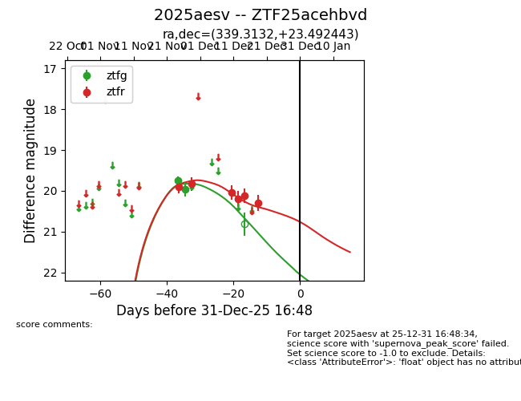
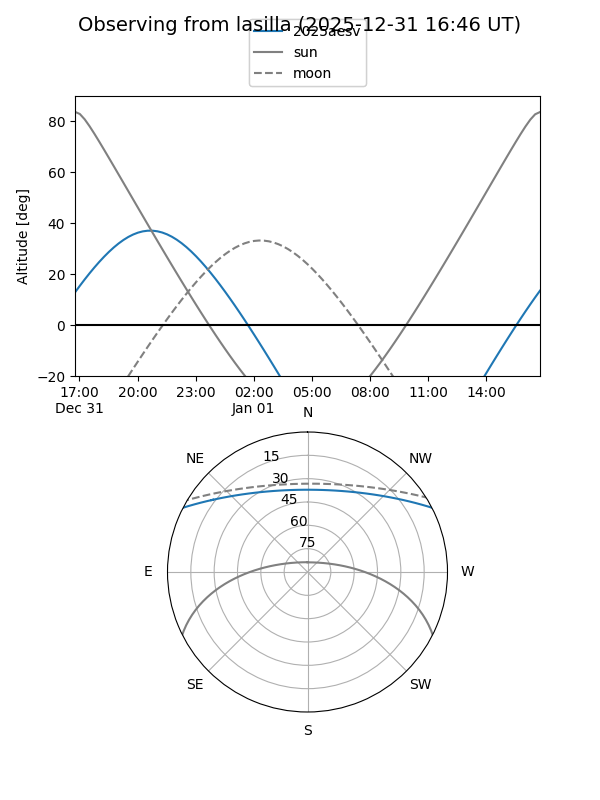
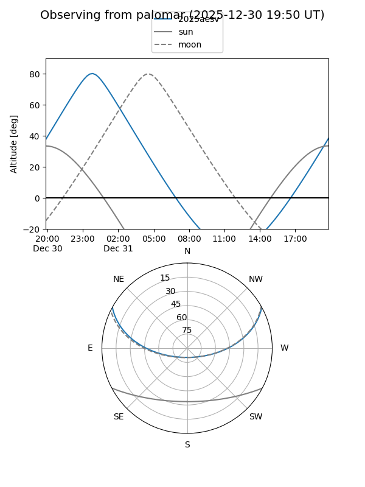
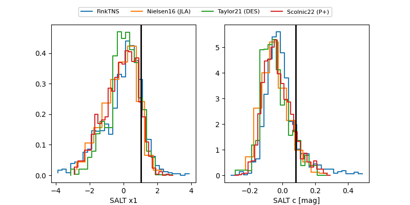

2025aesv
Target 2025aesv at 2025-12-19 02:27
Aliases and brokers:
FINK: fink-portal.org/ZTF25acehbvd
Lasair: lasair-ztf.lsst.ac.uk/objects/ZTF25acehbvd
ALeRCE: alerce.online/object/ZTF25acehbvd
TNS: wis-tns.org/object/2025aesv
YSE: ziggy.ucolick.org/yse/transient_detail/2025aesv
alt names
ZTF25acehbvd (ztf,fink_ztf)
2025aesv (tns,yse)
Coordinates:
equatorial (ra, dec) = 339.3132,+23.49244
equatorial (HMS+DMS) = 22:37:15.16,+23:29:32.79
galactic (l, b) = (87.1553,-29.90091)
Flags:
Photometry:
last ztfg=19.97, ztfr=20.30
2 ztfg, 6 ztfr detections
Lightcurve

Visibility


Additional plots
